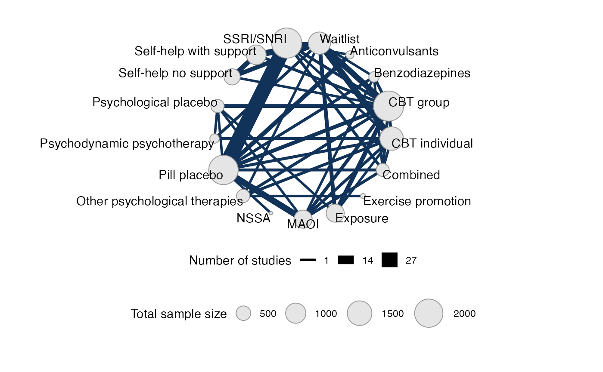
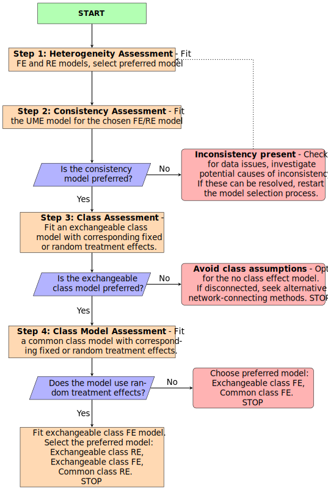
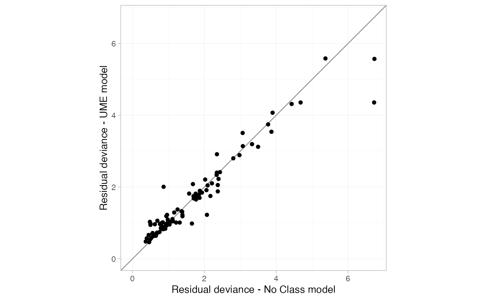
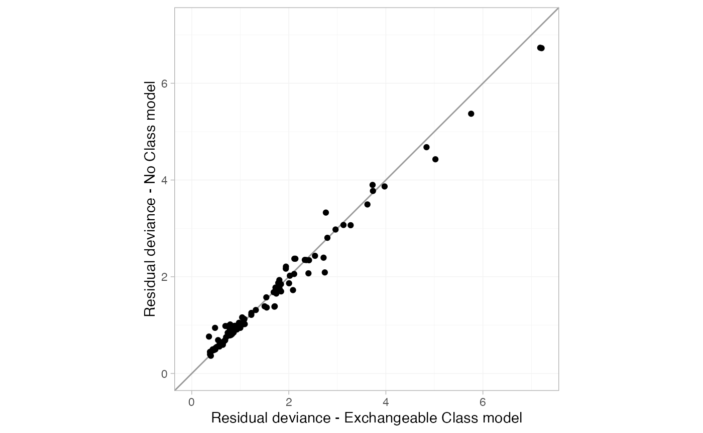
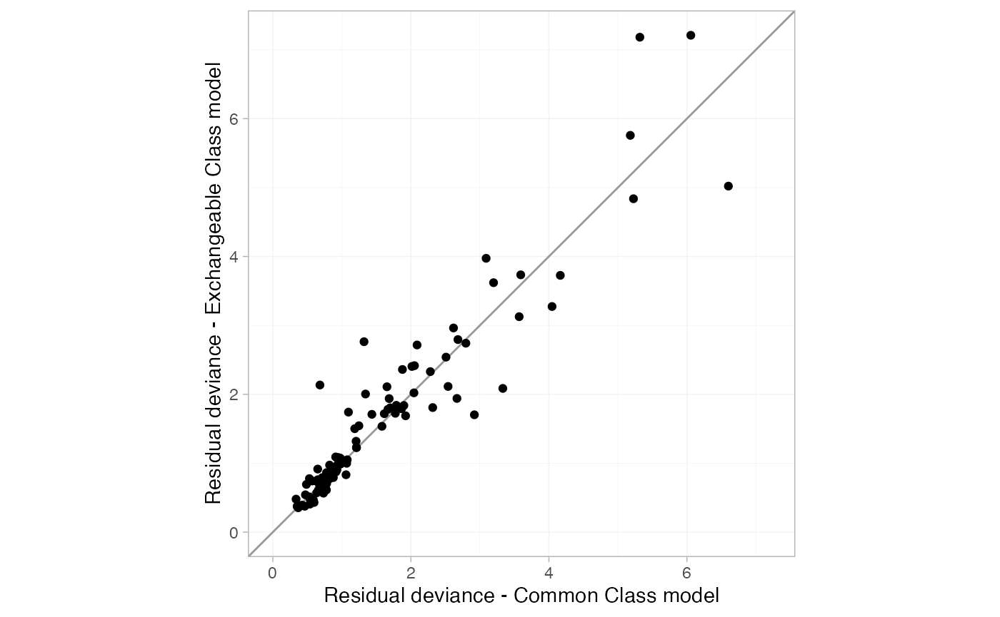
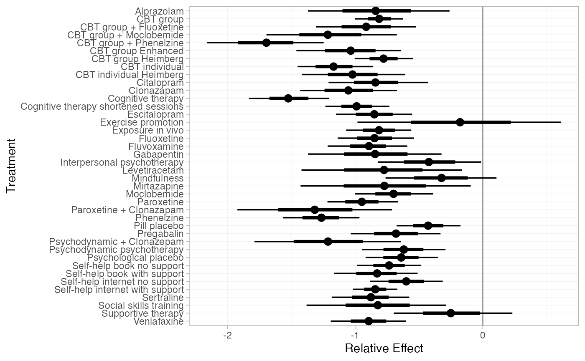
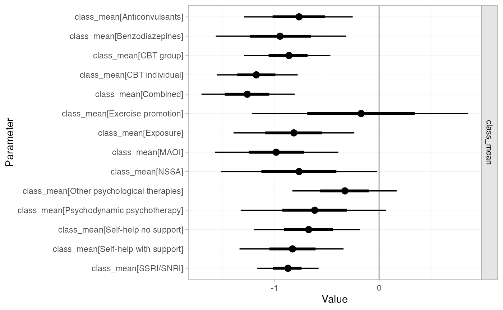
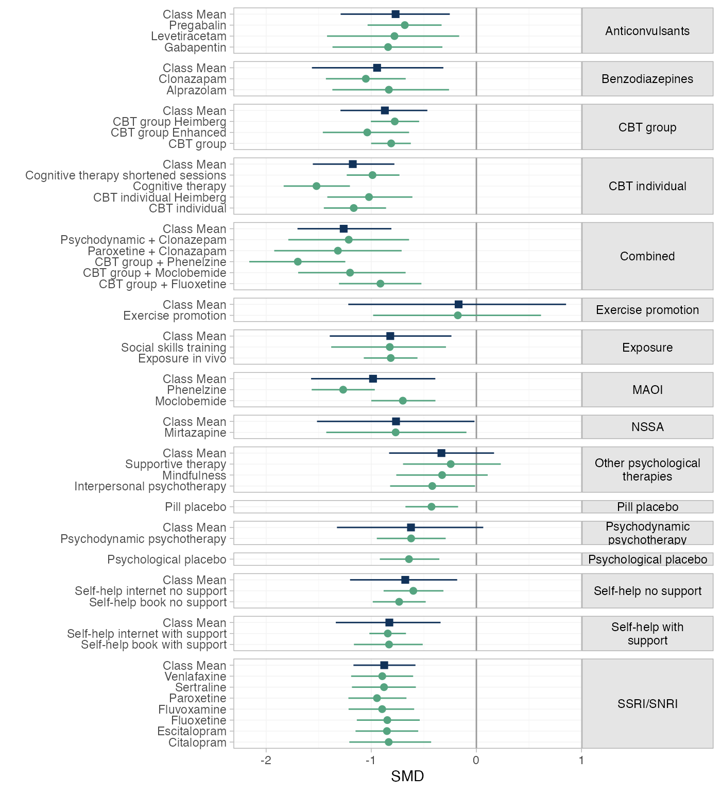
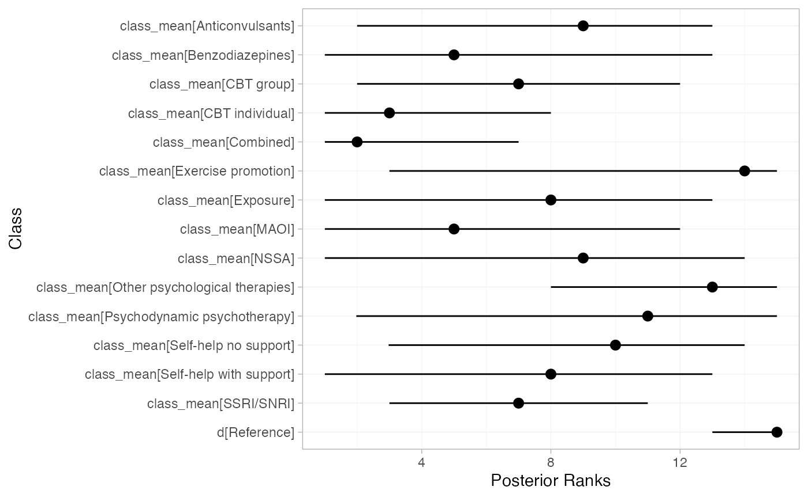
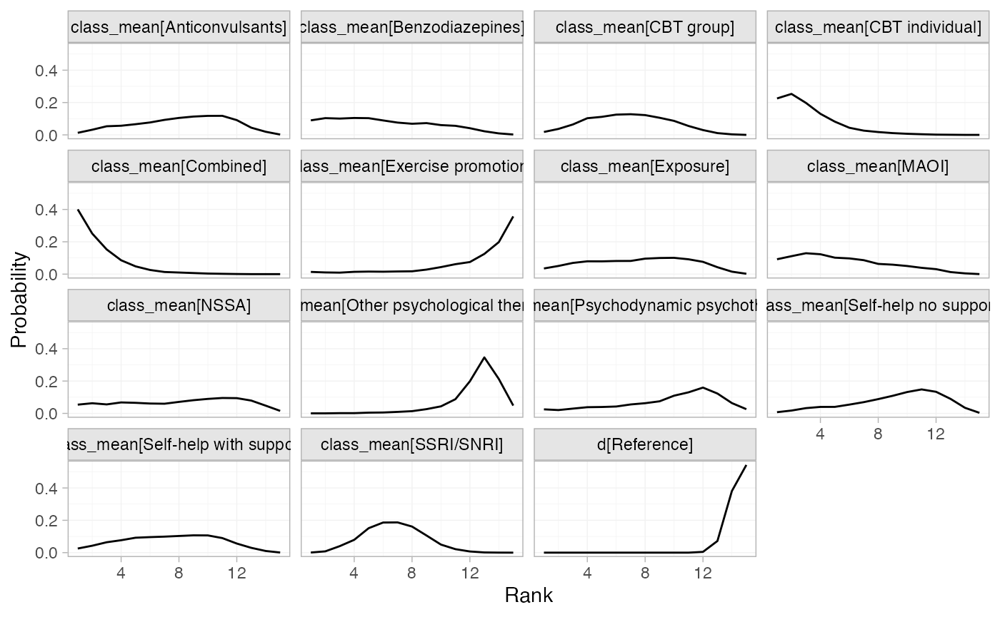

This vignette describes the analysis of 101 trials comparing 41
first-line treatments in 17 classes for social anxiety disorder in
adults (Mayo-Wilson et al. 2014).
The data are available in this package as
social_anxiety:
head(social_anxiety)
#> # A tibble: 6 × 8
#> studyn studyc trtn y se trtc classn classc
#> <dbl> <chr> <dbl> <dbl> <dbl> <chr> <dbl> <chr>
#> 1 1 BOWLER2012 1 NA NA Waitlist 1 Waitlist
#> 2 1 BOWLER2012 6 -0.916 0.318 Self-help internet no support 5 Self-help n…
#> 3 2 ABRAMOWITZ2009 1 NA NA Waitlist 1 Waitlist
#> 4 2 ABRAMOWITZ2009 7 -0.956 0.390 Self-help book with support 6 Self-help w…
#> 5 3 ANDERSSON2012 1 NA NA Waitlist 1 Waitlist
#> 6 3 ANDERSSON2012 8 -0.768 0.125 Self-help internet with support 6 Self-help w…Mayo-Wilson et al. (2014) analysed this dataset using a NMA model with class effects, which we recreate here. When fitting class effects models there are multiple modeling options available.
We demonstrate the model selection strategy proposed by Perren et al. (in preparation) to determine the most suitable class effects model.
Setting up the network
We follow Mayo-Wilson et al. by analysing results as standardised
mean differences (y) with standard errors (se)
therefore we use the function set_agd_contrast to set up
the network. We set treatment classes with
trt_class = classc and set Waitlist as the
network reference treatment.
sa_net <- set_agd_contrast(social_anxiety,
study = studyc,
trt = trtc,
y = y,
sample_size = 1,
se = se,
trt_class = classc,
trt_ref = "Waitlist")
sa_net
#> A network with 101 AgD studies (contrast-based).
#>
#> -------------------------------------------------- AgD studies (contrast-based) ----
#> Study Treatment arms
#> ABRAMOWITZ2009 2: Waitlist | Self-help book with support
#> ALDEN2011 2: Waitlist | CBT group
#> ALLGULANDER1999 2: Paroxetine | Pill placebo
#> ALLGULANDER2004 3: Paroxetine | Pill placebo | Venlafaxine
#> ANDERSSON2006 2: Waitlist | Exposure in vivo
#> ANDERSSON2012 2: Waitlist | Self-help internet with support
#> ANDREWS2011 2: CBT group | Self-help internet with support
#> ASAKURA2007 2: Fluvoxamine | Pill placebo
#> BALDWIN1999 2: Paroxetine | Pill placebo
#> BERGER2009 2: Waitlist | Self-help internet with support
#> ... plus 91 more studies
#>
#> Outcome type: continuous
#> ------------------------------------------------------------------------------------
#> Total number of treatments: 41, in 17 classes
#> Total number of studies: 101
#> Reference treatment is: Waitlist
#> Network is connectedWe create a plot at the class level by setting
level = "class".
plot(sa_net, level = "class", weight_nodes = TRUE) +
theme(legend.position = "bottom", legend.box = "vertical")
Model selection strategy
We follow the model selection strategy proposed by Perren et al. (in preparation)

STEP 1: Heterogeniety assessement
First, we assess heterogeneity by fitting fixed effects (FE) and
random effects (RE) models using nma() and stating
trt_effects = "random" for the RE model and
trt_effects = "fixed" for the FE model. We use
uninformative priors on the treatment effects with
prior_trt = normal(0, 100) and heterogeneity with
prior_het = half_normal(5).
set.seed(951)
sa_fit_FE <- nma(sa_net,
trt_effects = "fixed",
prior_trt = normal(0, 100),
prior_het = half_normal(5),
)
sa_fit_RE <- nma(sa_net,
trt_effects = "random",
prior_trt = normal(0, 100),
prior_het = half_normal(5),
)The model fit under the FE and RE models can be checked using the
dic() function.
(sa_dic_FE <- dic(sa_fit_FE))
#> Residual deviance: 288.1 (on 147 data points)
#> pD: 39.9
#> DIC: 328.1
(sa_dic_RE <- dic(sa_fit_RE))
#> Residual deviance: 162.6 (on 147 data points)
#> pD: 94.3
#> DIC: 256.9The DIC for the random effects model (256.9) is much lower than that of the fixed effects model (328.1) due to the large decrease in residual deviance showing a much better fit to the data. Therefore, our preferred model is the RE model, which we use in subsequent steps.
STEP 2: Consistency assessment
The next step is to assess inconsistency using an unrelated mean
effects model (UME), comparing model fit statistics for the UME model
and the NMA (consistency) model, both with RE. To fit a UME model we
specify consistency = "ume".
sa_UME_RE <- nma(sa_net,
trt_effects = "random",
consistency = "ume",
prior_trt = normal(0, 100),
prior_het = half_normal(5))We compare model fit from the NMA (consistency) RE model and the UME
RE model using the dic() function and
.
(sa_dic_RE <- dic(sa_fit_RE))
#> Residual deviance: 162.6 (on 147 data points)
#> pD: 94.3
#> DIC: 256.9
(sa_dic_ume_RE <- dic(sa_UME_RE))
#> Residual deviance: 161.3 (on 147 data points)
#> pD: 109
#> DIC: 270.4
summary(sa_UME_RE, pars = "tau")
#> mean sd 2.5% 25% 50% 75% 97.5% Bulk_ESS Tail_ESS Rhat
#> tau 0.22 0.03 0.16 0.2 0.22 0.24 0.29 878 2051 1
summary(sa_fit_RE, pars = "tau")
#> mean sd 2.5% 25% 50% 75% 97.5% Bulk_ESS Tail_ESS Rhat
#> tau 0.21 0.03 0.15 0.18 0.2 0.23 0.27 1127 2095 1The residual deviance is not meaningfully different between the two models, however, the DIC is lower in the NMA model (256.9) compared to the UME model (270.4). There is no evidence of inconsistency at the global level.
To asses local inconsistency, we use the plot() function
that produces a “dev-dev” plot of the residual deviance contributions
for the UME model plotted against the NMA consistency model.
plot(sa_dic_RE, sa_dic_ume_RE, show_uncertainty = FALSE) +
xlab("Residual deviance - No Class model") +
ylab("Residual deviance - UME model")
The dev-dev plot comparing residual deviance contributions for the UME model and no-class model shows that most data points lie close to the line of equality.
as.data.frame(sa_dic_RE) %>%
arrange(desc(resdev)) %>%
head(5)
#> .study n_contrast resdev leverage dic df
#> 1 ALDEN2011 1 6.734567 0.4807275 7.215294 1
#> 2 EMMELKAMP2006 2 6.726275 0.9495117 7.675786 2
#> 3 STANGIER2003 2 5.370313 1.0404009 6.410714 2
#> 4 VERSIANI1992 2 4.678505 1.1216433 5.800149 2
#> 5 HEIMBERG1998 3 4.428477 2.0041343 6.432611 3We can see from investigating the pointwise contributions to the
residual deviance that the two outlier studies are ALDEN2011 and
EMMELKAMP2006 with their large resdev values in the no
class model.
We can explore the consistency of specific evidence loops using
node-splitting by setting consistency = "nodesplit".
However, given the size of the network, running node-splitting on all
comparisons would be computationally intensive. We instead run the
node-splitting analysis specifically for the loops that include the
studies identified in the dev-dev plots (ALDEN2011 and EMMELKAMP2006).
We first define the specific treatment comparisons of interest by
creating two data frames that specify the desired treatment comparisons.
These are then passed to the nodesplit argument within the
nma() function.
EMMELKAMP2006 <- data.frame(
Treatment_1 = c("CBT individual", "Waitlist", "Waitlist"),
Treatment_2 = c("Psychodynamic psychotherapy", "Psychodynamic psychotherapy", "CBT individual")
)
ALDEN2011 <- data.frame(
Treatment_1 = c("Waitlist"),
Treatment_2 = c("CBT group")
)
sa_fit_RE_nodesplit_EMMELKAMP <- nma(sa_net,
consistency = "nodesplit",
nodesplit = EMMELKAMP2006,
trt_effects = "random",
prior_trt = normal(0, 100),
prior_het = half_normal(5),
)
#> Fitting model 1 of 3, node-split: Psychodynamic psychotherapy vs. CBT individual
#> Fitting model 2 of 3, node-split: Psychodynamic psychotherapy vs. Waitlist
#> Fitting model 3 of 3, node-split: CBT individual vs. Waitlist
sa_fit_RE_nodesplit_ALDEN <- nma(sa_net,
consistency = "nodesplit",
nodesplit = ALDEN2011,
trt_effects = "random",
prior_trt = normal(0, 100),
prior_het = half_normal(5),
)
#> Fitting model 1 of 1, node-split: CBT group vs. Waitlist
summary(sa_fit_RE_nodesplit_ALDEN)
#> Node-splitting model fitted for 1 comparison: CBT group vs. Waitlist.
#>
#> mean sd 2.5% 25% 50% 75% 97.5% Bulk_ESS Tail_ESS Rhat
#> d_dir -0.90 0.14 -1.17 -0.99 -0.90 -0.81 -0.63 3562 3110 1
#> d_ind -0.74 0.14 -1.01 -0.83 -0.73 -0.64 -0.46 1008 1685 1
#> omega -0.16 0.18 -0.53 -0.28 -0.16 -0.03 0.18 1750 2566 1
#> tau 0.21 0.03 0.15 0.19 0.21 0.23 0.27 1268 2393 1
#>
#> Residual deviance: 161.9 (on 147 data points)
#> pD: 94.9
#> DIC: 256.8
#>
#> Bayesian p-value: 0.38
summary(sa_fit_RE_nodesplit_EMMELKAMP)
#> Node-splitting models fitted for 3 comparisons.
#>
#> --------------------- Node-split Psychodynamic psychotherapy vs. CBT individual ----
#>
#> mean sd 2.5% 25% 50% 75% 97.5% Bulk_ESS Tail_ESS Rhat
#> d_dir 0.71 0.33 0.07 0.50 0.72 0.93 1.34 4630 3316 1
#> d_ind 0.44 0.26 -0.08 0.27 0.43 0.61 0.93 2503 2808 1
#> omega 0.27 0.39 -0.49 0.02 0.28 0.53 1.03 3634 2533 1
#> tau 0.21 0.03 0.15 0.19 0.21 0.23 0.27 1101 2198 1
#>
#> Residual deviance: 161.8 (on 147 data points)
#> pD: 94.8
#> DIC: 256.5
#>
#> Bayesian p-value: 0.47
#>
#> --------------------------- Node-split Psychodynamic psychotherapy vs. Waitlist ----
#>
#> mean sd 2.5% 25% 50% 75% 97.5% Bulk_ESS Tail_ESS Rhat
#> d_dir -0.60 0.18 -0.95 -0.72 -0.60 -0.48 -0.24 5165 3238 1
#> d_ind -0.67 0.42 -1.49 -0.96 -0.67 -0.38 0.14 3636 3389 1
#> omega 0.07 0.44 -0.78 -0.23 0.08 0.37 0.94 3816 3242 1
#> tau 0.21 0.03 0.15 0.19 0.21 0.23 0.27 1516 2297 1
#>
#> Residual deviance: 163 (on 147 data points)
#> pD: 95.6
#> DIC: 258.6
#>
#> Bayesian p-value: 0.87
#>
#> ---------------------------------------- Node-split CBT individual vs. Waitlist ----
#>
#> mean sd 2.5% 25% 50% 75% 97.5% Bulk_ESS Tail_ESS Rhat
#> d_dir -0.84 0.24 -1.31 -1.00 -0.84 -0.68 -0.37 5278 3755 1.00
#> d_ind -1.46 0.24 -1.95 -1.62 -1.46 -1.29 -0.98 1636 2329 1.00
#> omega 0.62 0.34 -0.05 0.39 0.63 0.84 1.29 2198 2805 1.00
#> tau 0.20 0.03 0.15 0.18 0.20 0.22 0.27 1290 1878 1.01
#>
#> Residual deviance: 161.7 (on 147 data points)
#> pD: 94.3
#> DIC: 256
#>
#> Bayesian p-value: 0.071Our node‐splitting analysis shows that the CBT individual and Waitlist comparison has a p-value of 0.065 and a stronger effect for the indirect estimate compared to the direct estimate, however the CrIs do overlap and both estimates are in the same direction and do not include 0. This indicates no evidence of inconsistency in the network meta‐analysis. However, studies should be reviewed and sensitivity analyses are advised.
STEP 3: Class effects assessment
In this step, we assess whether a class assumption is suitable for
the data by comparing our NMA RE model with an exchangeable class model
with a RE treatment model. In this model, we specify
class_effects = "exchangeable", meaning that treatments
within each class are considered to be from a common distribution. The
prior_class_sd sets a prior on the standard deviation
between treatment effects within each class. Because it is difficult to
estimate the class standard deviations with only a small number of
treatments in each class, here we specify an informative
prior distribution that is chosen to keep class variability within a
clinically-plausible range (Perren et al., in preparation). We
also define class_sd as a list of character vectors
indicating which classes share a common SD, again aiding estimation of
these parameters. For the class effects means,
prior_class_mean is set as
.
sa_fit_EXclass_RE <- nma(sa_net,
trt_effects = "random",
prior_trt = normal(0, 100),
prior_het = half_normal(5),
class_effects = "exchangeable",
prior_class_mean = normal(0, 10),
prior_class_sd = normal(0.33,0.1),
class_sd =
list(`Exercise and SH no support` =
c("Exercise promotion", "Self-help no support"),
`SSRIs and NSSA` =
c("SSRI/SNRI", "NSSA"),
`Psychodynamic & Other psychological therapies` =
c("Psychodynamic psychotherapy", "Other psychological therapies"))
)We compare model fit from the Exchangeable class RE model and the no
class RE model using the dic() function and
.
(sa_dic_EXclass_RE <- dic(sa_fit_EXclass_RE))
#> Residual deviance: 163.4 (on 147 data points)
#> pD: 88.2
#> DIC: 251.6
(sa_dic_RE <- dic(sa_fit_RE))
#> Residual deviance: 162.6 (on 147 data points)
#> pD: 94.3
#> DIC: 256.9
summary(sa_fit_RE, pars = "tau")
#> mean sd 2.5% 25% 50% 75% 97.5% Bulk_ESS Tail_ESS Rhat
#> tau 0.21 0.03 0.15 0.18 0.2 0.23 0.27 1127 2095 1
summary(sa_fit_EXclass_RE, pars = "tau")
#> mean sd 2.5% 25% 50% 75% 97.5% Bulk_ESS Tail_ESS Rhat
#> tau 0.2 0.03 0.14 0.18 0.2 0.22 0.26 1366 2407 1We use the plot() function that produces a “dev-dev”
plot of the residual deviance contributions for the Exchangeable class
model plotted against the no class model.
plot(sa_dic_EXclass_RE, sa_dic_RE, show_uncertainty = FALSE) +
xlab("Residual deviance - Exchangeable Class model") +
ylab("Residual deviance - No Class model")
Although both models yield similar residual deviance (163.4 vs. 162.6) and between‐study heterogeneity, the exchangeable class model reduces model complexity—reflected by a lower effective number of parameters ( vs. 94.3) and a lower DIC (251.6 vs. 256.9). A deviance–deviance plot confirms that all data points fit equally well. Overall, these findings support using the class model for the social anxiety data.
STEP 4: Class Model Assessment
After we have determined that a class effects model is appropriate, it is time to finalise which combination of common or exchangeable class effects and fixed or random treatment effects provides the most suitable model fit. As we are using a random effects model, we now fit 2 other models to our data; Exchangeable class FE and Common class RE. This gives us a total of 3 models to compare. Exchangeable class FE, Exchangeable class RE and Common class RE.
sa_fit_COclass_RE <- nma(sa_net,
trt_effects = "random",
prior_trt = normal(0, 100),
prior_het = half_normal(5),
class_effects = "common")
sa_fit_EXclass_FE <- nma(sa_net,
trt_effects = "fixed",
prior_trt = normal(0, 100),
prior_het = half_normal(5),
class_effects = "exchangeable",
prior_class_mean = normal(0, 10),
prior_class_sd = normal(0.33,0.1),
class_sd =
list(`Exercise and SH no support` =
c("Exercise promotion", "Self-help no support"),
`SSRIs and NSSA` =
c("SSRI/SNRI", "NSSA"),
`Psychodynamic & Other psychological therapies` =
c("Psychodynamic psychotherapy", "Other psychological therapies"))
)We compare model fit from all three models using the
dic() function and evaluate
in the common class RE model and the exchangeable class RE model.
(sa_dic_COclass_RE <- dic(sa_fit_COclass_RE))
#> Residual deviance: 157.7 (on 147 data points)
#> pD: 93
#> DIC: 250.7
(sa_dic_EXclass_FE <- dic(sa_fit_EXclass_FE))
#> Residual deviance: 284.9 (on 147 data points)
#> pD: 34.4
#> DIC: 319.3
(sa_dic_EXclass_RE <- dic(sa_fit_EXclass_RE))
#> Residual deviance: 163.4 (on 147 data points)
#> pD: 88.2
#> DIC: 251.6
summary(sa_fit_COclass_RE, pars = "tau")
#> mean sd 2.5% 25% 50% 75% 97.5% Bulk_ESS Tail_ESS Rhat
#> tau 0.25 0.03 0.2 0.23 0.25 0.27 0.31 842 1890 1
summary(sa_fit_EXclass_RE, pars = "tau")
#> mean sd 2.5% 25% 50% 75% 97.5% Bulk_ESS Tail_ESS Rhat
#> tau 0.2 0.03 0.14 0.18 0.2 0.22 0.26 1366 2407 1Both random‐effects models showed substantially better fit than the
fixed‐effect model (posterior mean residual deviance of 157.7 and 163.4
versus 284.9, and DIC values of 250.7 and 251.6 versus 319.3). Although
the common class model achieved a slightly better absolute fit, it had
higher between‐study heterogeneity (0.25 vs. 0.20) than the exchangeable
class model. We use the plot() function to produce a
“dev-dev” plot of the residual deviance contributions for the
Exchangeable class model plotted against the no class model.
plot(sa_dic_COclass_RE, sa_dic_EXclass_RE, show_uncertainty = FALSE) +
xlab("Residual deviance - Common Class model") +
ylab("Residual deviance - Exchangeable Class model")
The dev–dev plot indicates that while some data points favor one model over the other, overall the fit is similar. Therefore, given nearly identical DIC scores, the choice between the two random‐effects models should be guided by clinical considerations: use the exchangeable class model if reporting distinct treatment‐level effects is important, or the common class model if the focus is on class-level effects and not concerned with potential variability of treatment effects within classes.
Results for final chosen model
Relative treatment effects
Relative treatment effects are produced with the
relative_effects() function, and can be plotted using
plot().
plot(relative_effects(sa_fit_EXclass_RE), ref_line = 0)
Relative class effects
We can produce a plot showing relative class effects against
Waitlist using plot() with
pars = "class_mean" to select these parameters.
plot(sa_fit_EXclass_RE,
pars = "class_mean",
ref_line = 0)
We can combine the treatment and class effects into a single plot as follows:
# Relative treatment effects
trt_eff <- as_tibble(relative_effects(sa_fit_EXclass_RE)) %>%
# Add in class details
mutate(Class = sa_net$classes[as.numeric(.trtb)],
level = "treatment")
# Class effects
class_eff <- as_tibble(summary(sa_fit_EXclass_RE, pars = "class_mean")) %>%
# Extract class details
mutate(Class = factor(gsub(".*\\[(.+)\\]", "\\1", parameter), levels = levels(sa_net$classes)),
level = "class",
.trtb = factor("Class Mean", levels = c(levels(sa_net$classes), "Class Mean")))
# Combine and plot
bind_rows(trt_eff, class_eff) %>%
ggplot(aes(y = .trtb,
x = mean, xmin = `2.5%`, xmax = `97.5%`,
colour = level, shape = level)) +
geom_vline(xintercept = 0, colour = "grey60") +
geom_pointrange() +
facet_grid(rows = "Class", scales = "free", space = "free", labeller = label_wrap_gen(22)) +
scale_shape_manual(values = c(15, 16), guide = guide_none()) +
scale_colour_manual(values = c("#113259", "#55A480"), guide = guide_none()) +
xlab("SMD") + ylab("") +
theme_multinma() +
theme(strip.text.y = element_text(angle = 0))
We aim to visualize the class ranks and rank probabilities by summarizing their distributions. To achieve this, we extract the posterior draws for class means, add a reference treatment, and compute the rank of each treatment at every iteration. We then summarize these ranks by calculating the median and 95% credible intervals to generate a point-range plot and derive the rank probability distributions for each treatment class, which we then plot.
# Class means
EXclass_mean <- as.matrix(sa_fit_EXclass_RE, pars = "class_mean")
EXclass_mean <- cbind(`d[Reference]` = 0, EXclass_mean)
# Take ranks at each iteration
EXranks <- t(apply(EXclass_mean, 1, rank))
# Get median rank and 95% credible interval
EXresults <- t(apply(EXranks, 2, quantile, probs = c(0.025, 0.5, 0.975)))
# Convert to data frame
EXresults_df <- as.data.frame(EXresults)
EXresults_df$class <- rownames(EXresults_df)
EXresults_df$class <- factor(EXresults_df$class,
levels = sort(unique(EXresults_df$class), decreasing = TRUE))
ggplot(EXresults_df, aes(x=class, y=`50%`, ymin=`2.5%`, ymax=`97.5%`)) +
geom_pointrange(size = 0.5) +
coord_flip() +
xlab("Class") + ylab("Posterior Ranks") +
theme_multinma()
Treatment classes with higher ranks have median values closer to 1, positioned toward the left of the x-axis. The Combined treatment class has the highest median rank, followed by CBT individual. In contrast, Exercise promotion appears to have the lowest rank among the treatment classes, aside from the reference.
We now calculate and plot the class rank probabilities.
EXranks_df <- as.data.frame(EXranks)
# Rank probabilities for class
rank_probs_EX <- apply(EXranks_df, 2, function(x) table(factor(x, levels = 1:ncol(EXranks_df))) / nrow(EXranks_df))
# Convert to data frame
rank_probs_df_EX <- as.data.frame(rank_probs_EX)
# Convert the data frame to a long format
rank_probs_long_EX <- rank_probs_df_EX %>%
mutate(Rank = row_number()) %>%
pivot_longer(
cols = -Rank,
names_to = "Class",
values_to = "Probability"
)
# Plot density
ggplot(rank_probs_long_EX, aes(x = Rank, y = Probability)) +
geom_line() +
facet_wrap(~ Class) +
theme_multinma() +
labs(x = "Rank",
y = "Probability")
Higher-ranked classes have a greater density on the left side of the x-axis, indicating a higher probability of achieving a top rank across posterior samples. The Combined class shows the highest density on the left, suggesting it is most likely to be ranked among the top treatments, followed by CBT individual. In contrast, most other classes have relatively flat distributions, reflecting greater uncertainty in their rankings. Exercise promotion, Other psychological therapies, and the reference class have densities skewed toward the right, indicating a higher probability of lower rankings.